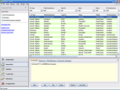
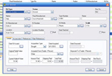
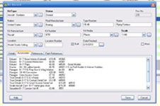
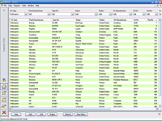

{kind=link}
{kind=link}
{kind=link}
{kind=link}


Modeling can be and insidious hobby, or at least certain aspects of it can. We start with the introduction of a favorite subject and some simple tools. Things may not go well on the first or even second try but the novice modeler persists and when not actively working on that new plastic treasure he starts looking around at what else may be out there. Then he says, “Ooo, that would be nice to have” and that is where it all starts. Next thing you know not only is there a model on the work bench but there are three or four boxes sitting on the sideboard waiting to be examined. Before you know it there are now nine or ten models and they have formed a small stack. At this point the modeler may begin to think it would be a good idea to start stashing this stuff in a closet or under the bed before the wife starts to think he has too many toys. Did you notice that a new word entered the modeler’s vocabulary at this point? Stash! There it is, now the modeler has a stash.
As time passes the Stash grows and grows and may have moved into the basement or utility room but grown it has. Now the modeler is looking at more detailed material. Ah, another new word – detail. Now the modeler is beginning to realize what an improvement photo etched and resin detail sets can make to a model plus, as the level of detail grows so to does the desire for better accuracy and the need for reference material becomes apparent. The stash is not only growing but is mutating. A few years has passed and now the modeler begins to realize the possibility of actually building all the kits that have been acquired may not be possible during a specific lifetime but this really matters little, now the modeler has mutated from a novice builder to a collector/builder. Soon the modeler realizes that a new tool must be introduced into his toolbox, a tool that can keep track of what he has, what accessories he has or needs for a particular kit and just where is that kit hiding. Unlike a squirrel the modeler’s ability to track where all the good nuts are buried is limited. Inventory and tracking software is very useful now, even necessary but what software will fill the need and not detract severely from the modeling budget? More importantly is there actually software out there designed for the modelers' specific needs?
I’ve walked down this road from novice modeler to advanced modeler and collector and have had to deal with all these things over the years. I began keeping track on my models both built and unbuilt on a Microsoft Excel Spreadsheet. When the stash was fifty or seventy five models this worked okay but by time I was passing 500 unbuilt kits it was getting not only bulky but difficult to manage. Finding specific kits and/or accessories became very difficult and I found myself buying duplicates unintentionally. I also came into the uncomfortable position of knowing that I owned a kit but not being able to physically locate it. Not long ago I came across the Suisoft model kit database designed by Gary Marples. I spent many hours transferring my data from the Excel spreadsheet into the Suisoft database and have found this to be a useful piece of software. Now Suisoft has a very nice website that shows you all the cool stuff the software can do with screen shots and directions so I’m not going to rehash all that information here, you can read it on their site just fine. What I am going to do is tell you about my experience and impressions during the ramp-up time from Excel to Database.

I hooked up with a copy of this software just shortly after it was introduced to the market and had made it into the second or third upgrade revision. I figured this would be a good time to try it hoping that the worse bugs would have already been worked out and I was right on that score. Right out of the gate the software worked as advertised with no issues. I did see some areas that could use improvement and that several data fields that I thought were necessary were missing. I sent an email to the creator of the software and received a very quick reply promising improvements with the next upgrade. These upgrades are free for registered users. Okay, that was cool, fast communications and apparent concern for what the customer thought. About a month to a month and a half down the road along came an upgrade and sure enough it covered all the issues that I had commented on previously. Okay, score one for caring about what your customer wants and actually doing something about it.

So now I have been playing with this software for a while, still don’t have all my kits entered but its coming along. The software is not 100% bug free but the few I found I reported and got response right back with promises to fix on the next upgrade and with instructions on how to work around them until then. Let me be clear here, the bugs were very minor. So far the whole customer service thing is very good. Operationally I am liking the software because now I have search parameters that work well. I can find kits very quickly in the database and then am able to find them very quickly in the warehouse. Yeah, I’ve moved beyond hiding things under the bed now. The wife just has to learn to deal with it.
Another couple months have passed and 90% of my stuff is now entered into the database. There are still things that need to be upgraded especially in the cost of kits area and some of the edit functions. At this point the database while effective is rigid. By this I mean the modeler cannot do much to customize the views. Along comes yet another upgrade. All previous bugs are now fixed; fields are expanded and views now customizable. Financial information can now be entered on each kit as to cost, shipping costs, selling price and such. Over some five or six months I have watched this software develop from a basic database to a fully functional tool that is a serous benefit to the modeler. I've heard there are even now new updates planned for this software and can hardly wait to see what comes next.
In a nutshell these are my thoughts concerning Gary Marples and his product, the KitBase Scale Model Database. The man is obviously skilled in the workings of database software and is knowledgeable about the needs of the modeling community. He responds quickly to customer concerns and is willing to accept input from his customer base. He is actively working to continually improve his product. His product is very useful to the modeler allowing for the digital compilation of kit information, reference materials and pictures. I wish I had this software at my disposal ten years ago when I first started documenting my kits. For the price he is asking, less than the cost of most contemporary kits, this is a purchase worth making.